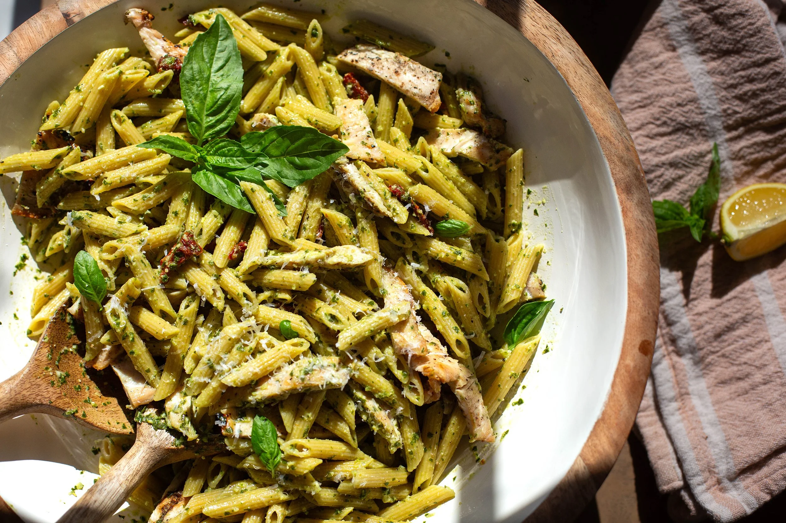

3 Easy Recipes in 30 Minutes Or Less
Chicken Pesto Pasta

Ingredients
-
6 Chicken Cutlets (or swap for chicken breast or thighs)
-
1 Tbsp. Olive Oil
-
1 Tbsp. Salt
-
1/2 Tbsp. Black Pepper
-
2 Tbsp. Diced Sun Dried Tomatoes
-
1 Lb. Penne Pasta
-
1/2 Cup Grated Parmesan
For The Pesto
-
2 Cups Fresh Basil
-
2 Cloves of Garlic
-
1/4 Cup Fresh Grated Parmesan Cheese
-
2 Tbsp. of Pine Nuts
-
1/4 Cup of Extra Virgin Olive Oil (add more olive Oil if
you need more consistency)
-
1 Tsp. Salt
-
1/2 Tsp. Pepper
-
1/2 Tsp. Lemon Juice
How To Make It
Total Steps: 10
-
Rub chicken with olive oil, salt, and pepper to season on
all sides.
-
Preheat a grill or grill pan to medium high heat and cook
chicken on both sides for 3-4 minutes until cutlets are
cooked through. Adjust cook time depending on size of the
chicken cutlets or if swapping for breasts of thighs.
-
While the chicken is cooking, bring a large pot of water to
a boil on the stove over high heat. Salt liberally after
boiling.
-
Add pasta and cook until al dente or according to the
package's directions.
-
While the pasta is boiling , make the pesto by pureeing
basil, garlic, parmesan, pine nuts, lemon juice, salt, and
pepper until smooth in texture. Taste test for seasoning.
-
When pasta is done cooking, reserve a cup or so of the pasta
water before draining the pasta.
-
Slice the chicken.
-
Add hot pasta back to the hot pot and then add in pesto,
parmesan, and sun-dried tomatoes along with half of the
pasta water and stir to combine.
-
Add more pasta water if needed for consistency.
-
Add chicken, toss with pasta, and serve with more parmesan
if desired.

Sit Back and Enjoy!